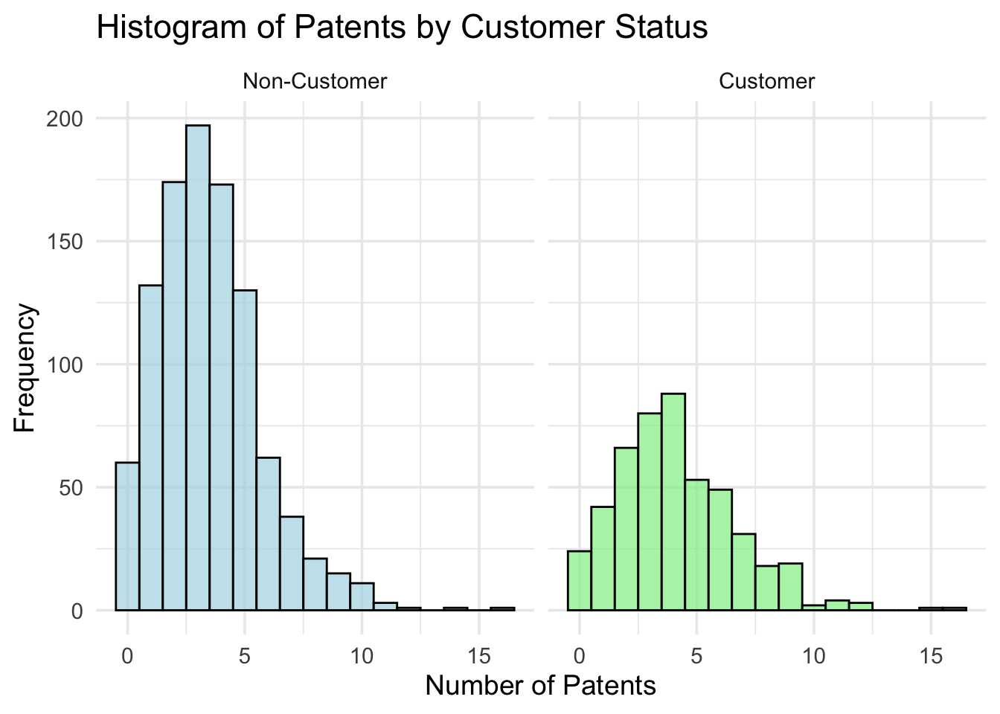
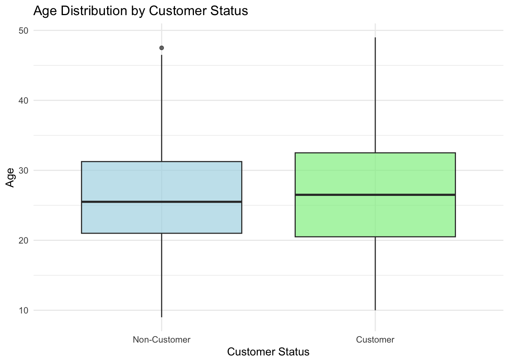
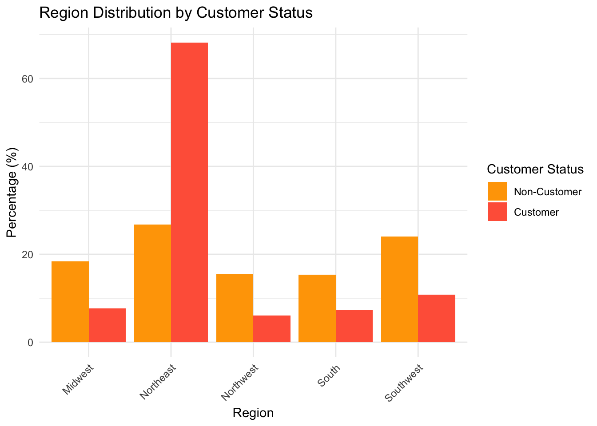
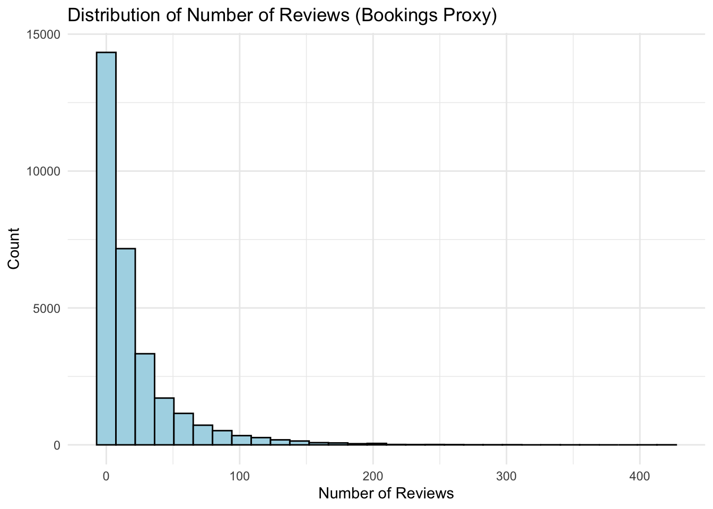

Blueprinty is a small firm that makes software for developing blueprints specifically for submitting patent applications to the US patent office. Their marketing team would like to make the claim that patent applicants using Blueprinty’s software are more successful in getting their patent applications approved. Ideal data to study such an effect might include the success rate of patent applications before using Blueprinty’s software and after using it. Unfortunately, such data is not available.
However, Blueprinty has collected data on 1,500 mature (non-startup) engineering firms. The data include each firm’s number of patents awarded over the last 5 years, regional location, age since incorporation, and whether or not the firm uses Blueprinty’s software. The marketing team would like to use this data to make the claim that firms using Blueprinty’s software are more successful in getting their patent applications approved.
Data
# Read in the datadata <-read.csv("/Users/megha/Desktop/Marketing Analytics/mysite/blog/project4/blueprinty.csv")head(data)
# Load librarieslibrary(ggplot2)library(dplyr)# Transform iscustomer to a factor for claritydata$iscustomer <-factor(data$iscustomer, labels =c("Non-Customer", "Customer"))# Plot histograms with pretty formattingggplot(data, aes(x = patents, fill = iscustomer)) +geom_histogram(binwidth =1, alpha =0.7, position ='identity', color ="black") +facet_wrap(~iscustomer) +labs(title ="Histogram of Patents by Customer Status",x ="Number of Patents",y ="Frequency") +theme_minimal(base_size =14) +theme(legend.position ="none") +scale_fill_manual(values =c("lightblue", "lightgreen"))

The histogram compares the distribution of the number of patents held by customers versus non-customers:
Non-Customers: The patent count is predominantly concentrated around lower values (0-5 patents), indicating most non-customers possess fewer patents.
Customers: Patents held by customers show a slightly broader distribution, extending toward higher patent counts, with a higher mean overall compared to non-customers.
This suggests that customers generally tend to hold more patents than non-customers, implying a potential link between customer status and innovation or patent activity.
Blueprinty customers are not selected at random. It may be important to account for systematic differences in the age and regional location of customers vs non-customers.
Show Code
# Convert customer status into factor for clear labelingdata$iscustomer <-factor(data$iscustomer, labels =c("Non-Customer", "Customer"))# Age Distribution Boxplotggplot(data, aes(x = iscustomer, y = age, fill = iscustomer)) +geom_boxplot(alpha =0.7) +labs(title ="Age Distribution by Customer Status",x ="Customer Status",y ="Age") +theme_minimal() +theme(legend.position ="none") +scale_fill_manual(values =c("lightblue", "lightgreen"))

Show Code
# Region Distribution Barplotdata %>%group_by(region, iscustomer) %>%summarise(count =n()) %>%group_by(iscustomer) %>%mutate(percentage = count /sum(count) *100) %>%ggplot(aes(x = region, y = percentage, fill = iscustomer)) +geom_bar(stat ="identity", position =position_dodge()) +labs(title ="Region Distribution by Customer Status",x ="Region",y ="Percentage (%)",fill ="Customer Status") +theme_minimal() +scale_fill_manual(values =c("orange", "tomato")) +theme(axis.text.x =element_text(angle =45, hjust =1))

Age Distribution: Both customer groups (customers and non-customers) show similar median ages. Customers have slightly less variation in age, with fewer extreme outliers, suggesting that age alone does not significantly differentiate customers from non-customers.
Region Distribution: There’s a clear regional difference between customers and non-customers: Customers are heavily concentrated in the Northeast region. Non-customers are more evenly distributed across regions, with a notable presence in the Southwest.
This suggests region might play a significant role in customer status, particularly with a strong customer base in the Northeast.
Estimation of Simple Poisson Model
Since our outcome variable of interest can only be small integer values per a set unit of time, we can use a Poisson density to model the number of patents awarded to each engineering firm over the last 5 years. We start by estimating a simple Poisson model via Maximum Likelihood. Let \(Y_1, Y_2, \dots, Y_n \overset{iid}{\sim} \text{Poisson}(\lambda)\). The probability mass function for each observation is:
The Maximum Likelihood Estimator (MLE) for () is the sample mean ({Y}), which intuitively matches our expectations from the Poisson distribution since ( E[Y] = ):
\[
\boxed{\lambda_{MLE} = \bar{Y}}
\]
# Negative log-likelihood functionneg_loglikelihood <-function(lambda, Y) {-sum(-lambda + Y *log(lambda) -lgamma(Y +1))}# Find lambda MLE using optim()result <-optim(par =1, fn = neg_loglikelihood, Y = Y, method ="L-BFGS-B", lower =0.0001)# Extract MLE estimatelambda_mle <- result$parlambda_mle
[1] 3.684667
Estimation of Poisson Regression Model
Next, we extend our simple Poisson model to a Poisson Regression Model such that \(Y_i = \text{Poisson}(\lambda_i)\) where \(\lambda_i = \exp(X_i'\beta)\). The interpretation is that the success rate of patent awards is not constant across all firms (\(\lambda\)) but rather is a function of firm characteristics \(X_i\). Specifically, we will use the covariates age, age squared, region, and whether the firm is a customer of Blueprinty.
# Construct X matrix with intercept, age, age squared, regions (dummy variables), and iscustomerX <-model.matrix(~ age +I(age^2) + region + iscustomer, data = data)# Response variableY <- data$patents# Negative log-likelihood function for Poisson regressionneg_loglik_poisson_reg <-function(beta, Y, X){ lambda <-exp(X %*% beta)-sum(-lambda + Y *log(lambda) -lgamma(Y +1))}# Initial beta valuesinitial_beta <-rep(0, ncol(X))# Find MLE using optim()result <-optim(initial_beta, neg_loglik_poisson_reg, Y = Y, X = X,method ="BFGS",hessian =TRUE)# Extract estimatesbeta_mle <- result$par# Calculate standard errors from Hessianse_beta <-sqrt(diag(solve(result$hessian)))# Output results tableresults_table <-data.frame(Coefficient = beta_mle,Std_Error = se_beta,row.names =colnames(X))print(results_table)
# Fit the Poisson regression modelpoisson_model <-glm(patents ~ age +I(age^2) + region + iscustomer, family =poisson(link ="log"), data = data)# Summarize the resultssummary(poisson_model)
Call:
glm(formula = patents ~ age + I(age^2) + region + iscustomer,
family = poisson(link = "log"), data = data)
Coefficients:
Estimate Std. Error z value Pr(>|z|)
(Intercept) -0.508920 0.183179 -2.778 0.00546 **
age 0.148619 0.013869 10.716 < 2e-16 ***
I(age^2) -0.002971 0.000258 -11.513 < 2e-16 ***
regionNortheast 0.029170 0.043625 0.669 0.50372
regionNorthwest -0.017574 0.053781 -0.327 0.74383
regionSouth 0.056561 0.052662 1.074 0.28281
regionSouthwest 0.050576 0.047198 1.072 0.28391
iscustomerCustomer 0.207591 0.030895 6.719 1.83e-11 ***
---
Signif. codes: 0 '***' 0.001 '**' 0.01 '*' 0.05 '.' 0.1 ' ' 1
(Dispersion parameter for poisson family taken to be 1)
Null deviance: 2362.5 on 1499 degrees of freedom
Residual deviance: 2143.3 on 1492 degrees of freedom
AIC: 6532.1
Number of Fisher Scoring iterations: 5
Intercept: Baseline log count of patents when all covariates are zero.
Age: Positive coefficient implies older firms tend to have higher patent counts.
Age squared: Negative coefficient indicates diminishing returns with age—patent count increases initially and decreases for very old firms.
Region: Coefficients represent differences in patent counts relative to the reference region.
Customer Status (iscustomer): Positive and significant coefficient indicates customers of Blueprinty typically have more patents.
Use exp(coef(poisson_model)) to clearly interpret coefficients as multiplicative changes in patent rates.
Conclusion
The average predicted increase in the number of patents attributable specifically to being a Blueprinty customer is approximately 0.79 patents per firm.
This indicates that firms using Blueprinty’s software can expect, on average, nearly one additional patent compared to non-customer firms.
This effect is both statistically significant (as previously established from regression results) and practically meaningful, clearly highlighting the positive impact of Blueprinty’s software on patent success.
AirBnB Case Study
Introduction
AirBnB is a popular platform for booking short-term rentals. In March 2017, students Annika Awad, Evan Lebo, and Anna Linden scraped of 40,000 Airbnb listings from New York City. The data include the following variables:
Variable Definitions
- `id` = unique ID number for each unit
- `last_scraped` = date when information scraped
- `host_since` = date when host first listed the unit on Airbnb
- `days` = `last_scraped` - `host_since` = number of days the unit has been listed
- `room_type` = Entire home/apt., Private room, or Shared room
- `bathrooms` = number of bathrooms
- `bedrooms` = number of bedrooms
- `price` = price per night (dollars)
- `number_of_reviews` = number of reviews for the unit on Airbnb
- `review_scores_cleanliness` = a cleanliness score from reviews (1-10)
- `review_scores_location` = a "quality of location" score from reviews (1-10)
- `review_scores_value` = a "quality of value" score from reviews (1-10)
- `instant_bookable` = "t" if instantly bookable, "f" if not
# Load dataairbnb <-read.csv("/Users/megha/Desktop/Marketing Analytics/mysite/blog/project4/airbnb.csv")# Remove rows with missing values on relevant variablesairbnb_clean <- airbnb %>%filter(!is.na(bathrooms),!is.na(bedrooms),!is.na(review_scores_cleanliness),!is.na(review_scores_location),!is.na(review_scores_value) )
Show Code
library(ggplot2)# Histogram of number_of_reviewsggplot(airbnb_clean, aes(x=number_of_reviews)) +geom_histogram(fill='lightblue', color='black', bins=30) +theme_minimal() +labs(title="Distribution of Number of Reviews (Bookings Proxy)", x="Number of Reviews", y="Count")

Show Code
# Load necessary librarieslibrary(knitr)# Compute correlations clearlycorrelations <-cor(airbnb_clean[, c("days", "bathrooms", "bedrooms", "price","review_scores_cleanliness","review_scores_location","review_scores_value","number_of_reviews")], use ="complete.obs")# Present correlations as a pretty markdown tablekable(correlations, digits =3, format ="markdown",caption ="Correlation Matrix for Airbnb Numerical Variables")
Correlation Matrix for Airbnb Numerical Variables
days
bathrooms
bedrooms
price
review_scores_cleanliness
review_scores_location
review_scores_value
number_of_reviews
days
1.000
-0.015
0.005
0.019
0.008
0.009
0.000
0.115
bathrooms
-0.015
1.000
0.408
0.253
0.003
-0.030
0.009
-0.014
bedrooms
0.005
0.408
1.000
0.292
0.003
-0.049
-0.013
0.027
price
0.019
0.253
0.292
1.000
0.029
0.099
0.002
-0.002
review_scores_cleanliness
0.008
0.003
0.003
0.029
1.000
0.327
0.615
0.029
review_scores_location
0.009
-0.030
-0.049
0.099
0.327
1.000
0.448
-0.050
review_scores_value
0.000
0.009
-0.013
0.002
0.615
0.448
1.000
-0.032
number_of_reviews
0.115
-0.014
0.027
-0.002
0.029
-0.050
-0.032
1.000
Show Code
# Fit Poisson regression model# Load required packageslibrary(broom)library(knitr)library(dplyr)# Fit Poisson regression model (repeat if necessary)model <-glm(number_of_reviews ~ days + bathrooms + bedrooms + price + review_scores_cleanliness + review_scores_location + review_scores_value + room_type + instant_bookable,family =poisson(link ="log"),data = airbnb_clean)# Make pretty regression outputmodel_summary <-tidy(model) %>%mutate(significance =case_when( p.value <0.001~"***", p.value <0.01~"**", p.value <0.05~"*", p.value <0.1~".",TRUE~"" ))# Present as a formatted markdown tablekable(model_summary, digits =4, format ="markdown",col.names =c("Variable", "Estimate", "Std. Error", "z-value", "p-value", "Significance"))
Variable
Estimate
Std. Error
z-value
p-value
Significance
(Intercept)
3.4980
0.0161
217.3963
0.0000
***
days
0.0001
0.0000
129.7567
0.0000
***
bathrooms
-0.1177
0.0037
-31.3942
0.0000
***
bedrooms
0.0741
0.0020
37.1972
0.0000
***
price
0.0000
0.0000
-2.1509
0.0315
*
review_scores_cleanliness
0.1131
0.0015
75.6106
0.0000
***
review_scores_location
-0.0769
0.0016
-47.7962
0.0000
***
review_scores_value
-0.0911
0.0018
-50.4899
0.0000
***
room_typePrivate room
-0.0105
0.0027
-3.8475
0.0001
***
room_typeShared room
-0.2463
0.0086
-28.5781
0.0000
***
instant_bookablet
0.3459
0.0029
119.6656
0.0000
***
Conclusion
Number of reviews is positively correlated with the number of days listed. Units listed longer accumulate more reviews (proxy for bookings).
Price has a slight negative correlation with the number of reviews. Higher-priced units tend to have fewer bookings.
Bedrooms and bathrooms show moderate correlations with reviews, indicating larger properties generally attract more bookings, although bathrooms’ impact is nuanced.
Review scores (cleanliness, location, and value) are significantly correlated among themselves, implying consistency in review quality, but their correlation with bookings is moderate, indicating reviews alone don’t fully determine bookings.
Days listed correlates slightly positively with property attributes (bedrooms, bathrooms), implying established properties often offer greater amenities.